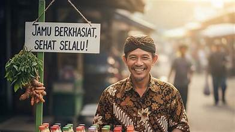

Asisten AI untuk UMKM
Platform ini dirancang untuk membantu para pelaku UMKM mengelola dan mengembangkan usahanya secara efisien dengan bantuan Kecerdasan Buatan (AI).

Profile
Merawat Tradisi, Menjaga Kesehatan.
Menyajikan seduhan racikan bahan alami pilihan tanpa bahan pengawet. Warisan rempah Nusantara untuk tubuh yang sehat, bugar, dan penuh stamina setiap hari.
Form Data Pengguna
Dokumentasi / Media